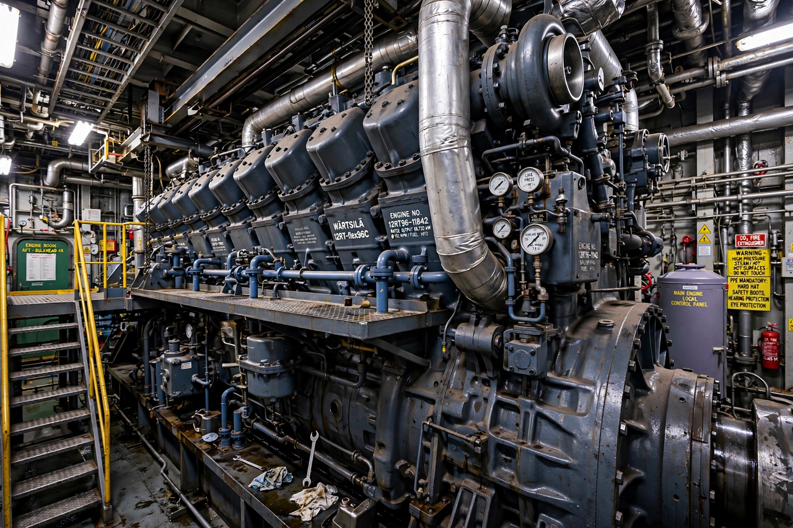

Diesel engine
From Wikipedia, the free encyclopedia

A ship's diesel engine.A diesel engine is an internal combustion engine in which air is compressed to a high temperature and fuel injected into it ignites spontaneously (compression ignition), rather than by spark plugs. Invented by Rudolf Diesel (patent 1892; first practical engine 1897), diesels are more efficient than petrol engines, with high torque at low speed. They power most trucks, ships, locomotives, construction machinery and many cars, though car use has declined since the 2015 diesel-emissions scandal.
Operation
A diesel compresses air alone at ratios of 14:1–25:1, heating it above 500 °C; fuel injected near top dead centre burns immediately. Turbocharging, common-rail injection (up to ~2,500 bar) and electronic control refined power and emissions; after-treatment includes particulate filters and urea-based SCR for NOx.
Applications
Two-stroke slow-speed diesels are the most efficient prime movers ever built (over 50% thermal efficiency) and drive nearly all large ships. Diesel-electric locomotives and gensets, military vehicles and farm machinery rely on the type; petrol-electric hybrids replaced diesel in many passenger cars.
History and controversy
Diesel sought an engine approaching Carnot efficiency; his 1897 MAN engine achieved about 26% — double contemporary steam. The 2015 Volkswagen \'Dieselgate\' defeat-device scandal, plus urban air-quality rules and low-emission zones, collapsed the European diesel car market within a decade.